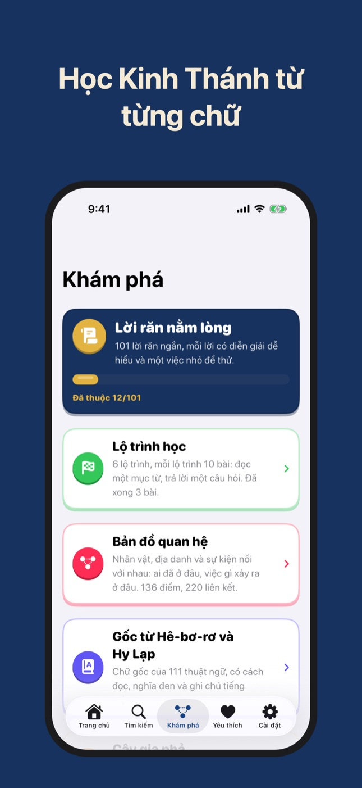
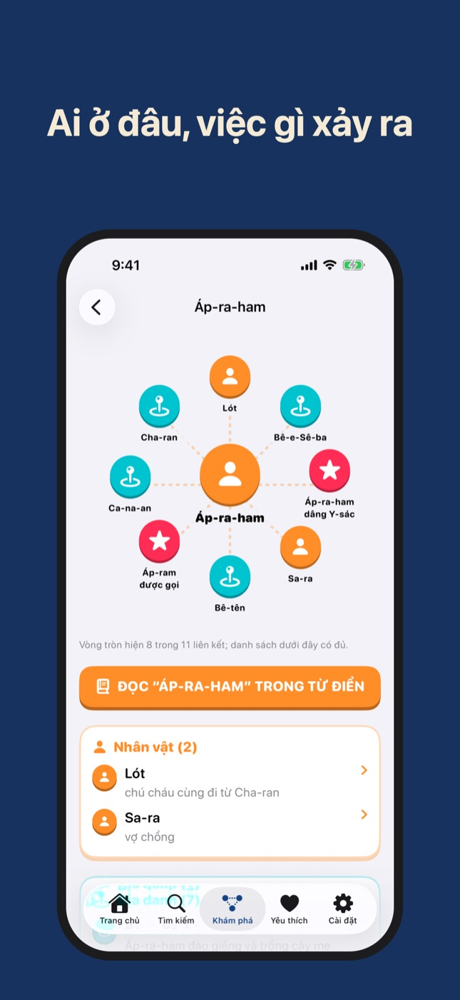
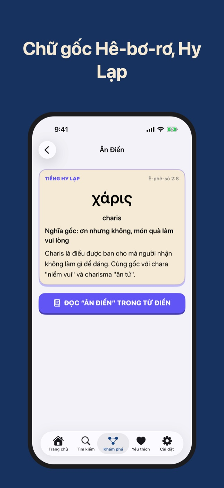

Từ Điển Kinh Thánh
Chữ gốc, bản đồ, lộ trình học
2000 thuật ngữ Kinh Thánh tiếng Việt, mỗi mục vừa một màn hình. Lộ trình học có câu hỏi, bản đồ ai ở đâu, chữ gốc Hê-bơ-rơ và Hy Lạp.
Ứng dụng cho iPhone · sắp có trên App Store



Lộ trình học
6 lộ trình, mỗi lộ trình 10 bài: Làm quen với Kinh Thánh, Chúa Giê-xu là ai, Tin Lành trong mười chữ, Mười người mở đường, Hội Thánh đầu tiên, Sống đức tin mỗi ngày. Mỗi bài đọc một mục từ rồi trả lời một câu hỏi; xong bài này thì mở bài kế tiếp.
Bản đồ quan hệ
Ai đã ở đâu, việc gì xảy ra ở đâu: 136 nhân vật, địa danh và sự kiện nối với nhau. Chạm Áp-ra-ham để thấy U-rơ, Cha-ran, Bê-tên, núi Mô-ri-a, rồi chạm tiếp để đi xa hơn.
Chữ gốc Hê-bơ-rơ và Hy Lạp
111 thuật ngữ có chữ gốc, cách đọc, nghĩa đen và ghi chú tiếng Việt. Ân Điển là charis, món quà làm vui lòng; Bết-lê-hem là "nhà bánh".
2000 thuật ngữ, mỗi mục một màn hình
Nhân vật, địa danh, sự kiện, dụ ngôn và giáo lý, xếp vào năm nhóm. Mỗi mục ngắn, có định nghĩa và các câu Kinh Thánh liên quan. Thêm cây gia phả, các tên gọi Tin Lành và Công giáo, và hình ảnh hay được giảng.
Lời răn nằm lòng
101 lời răn ngắn, mỗi lời có diễn giải dễ hiểu và một việc nhỏ để thử hôm nay. Đánh dấu những lời bạn đã thuộc.
Gõ không dấu vẫn tìm ra
Tìm theo tên, một chữ trong định nghĩa hay một câu như "Rô-ma 8". Gõ "an dien" là ra Ân Điển.
Cỡ chữ, phông chữ, Sáng và Tối
Tăng giảm cỡ chữ cho cả ứng dụng, chọn một trong sáu phông chữ có sẵn trên iPhone, giao diện Sáng, Tối hoặc theo máy.
Không cần mạng
Toàn bộ nội dung nằm sẵn trong ứng dụng. Không tài khoản, không quảng cáo, không thu thập dữ liệu. Tiến độ học chỉ nằm trên máy của bạn.